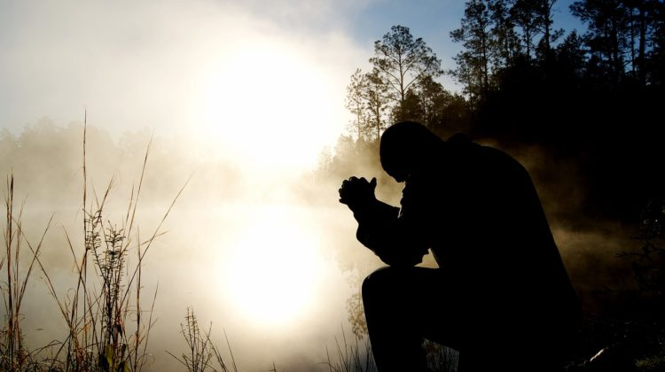

"No seas sabio en tu propia opinión; Teme a Jehová, y apártate del mal"- Proverbios 3:7
"Porque será medicina a tu cuerpo, Y refrigerio para tus huesos" - Proverbios 3:8
"Así que, recibiendo nosotros un reino inconmovible, tengamos gratitud, y mediante ella sirvamos a Dios agradándole con temor y reverencia" - Hebreos 12:28
"Porque nuestro Dios es fuego consumidor" - Hebreos 12:29
"El temor de Jehová es aborrecer el mal; La soberbia y la arrogancia, el mal camino, Y la boca perversa, aborrezco" - Proverbios 8:13
"Mientras callé, se envejecieron mis huesos En mi gemir todo el día" - Salmos 32:3
"Porque de día y de noche se agravó sobre mí tu mano; Se volvió mi verdor en sequedades de verano" Selah - Salmos 32:4
"Mi pecado te declaré, y no encubrí mi iniquidad. Dije: Confesaré mis transgresiones a Jehová; Y tú perdonaste la maldad de mi pecado. Selah" Salmos 32:5
"Pero el fundamento de Dios está firme, teniendo este sello: Conoce el Señor a los que son suyos; y: Apártese de iniquidad todo aquel que invoca el nombre de Cristo" - 2 Timoteo 2:19
"Si confesamos nuestros pecados, él es fiel y justo para perdonar nuestros pecados, y limpiarnos de toda maldad" - 1 Juan 1:9